Meet Happy Little Pillow.
Turnarounds, expressions, poses, fur and material studies, colour variations, alternate designs and industry costumes. Built around Happy Little Pillow’s mint fur, padded cheeks and Ivory & Ink eyes. Earlier artwork is preserved in the previous-version archive.
Happy Little Pillow — 95-view rotation study
Five rows and nineteen columns, matching the reference layout. L90 through CENTER to R90 in labelled 10° steps; looking up, slightly up, straight, slightly down and down.
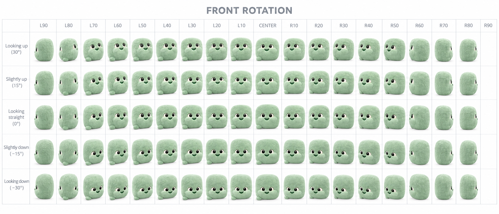
Updated with Ivory & Ink eyes. Five rows × nineteen columns. Generated visual study: angle spacing, pitch and tail geometry remain approximate; several neighboring views repeat. Use the master portrait for identity, not this grid as a measured 3D turnaround.Download full-resolution sheet ↓Happy Little Pillow — 95 rear views
The matching backside study: five rows and nineteen columns, from L90 through BACK to R90. Looking up, slightly up, straight, slightly down and down.
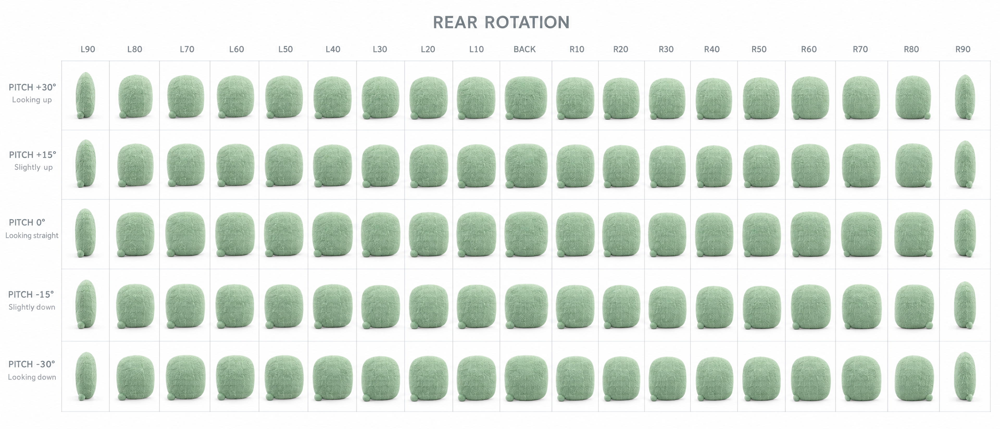
Updated rear-only study, with faces removed from the backside. Five rows × nineteen columns. Pitch, tail placement and incremental angles remain approximate; this is a concept sheet rather than a measured production turnaround.Download full-resolution rear sheet ↓Happy Little Pillow — 36 expressions
The approved mint pillow and padded cheeks, with a wider emotional range: happy, affectionate, grateful, curious, thinking, listening, surprised, worried, playful and sleepy. Includes opposite winks, tongue-out, tears and speaking mouth shapes.
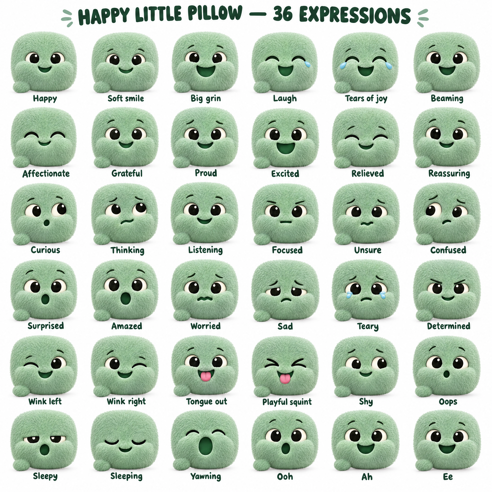
Face expressions informed by Unicode’s emoji library, adapted to the mascot. Click to inspect at full resolution.Download the 36-expression sheet ↓Hearts, kisses and familiar reactions
Twelve additional studies: heart-eyes, blowing a kiss, two puckered kisses, feeling loved, starstruck, pleading, happy tears, giggling, relief, a silly wink and cheering. These complement the 36-expression sheet.
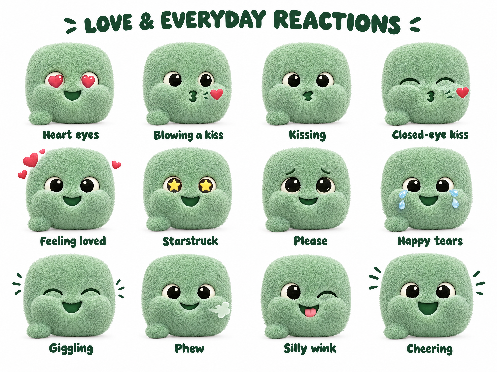
Click to view at full resolution.Download this sheet ↓Approved eyes — #5 Ivory & Ink
Selected for now: #5 Ivory & Ink (bottom center). Warm ivory eye whites and large ink-black pupils give his gaze contrast against the mint fur. Keep the approved padded cheeks and pillow shape. The other five options remain comparison references.
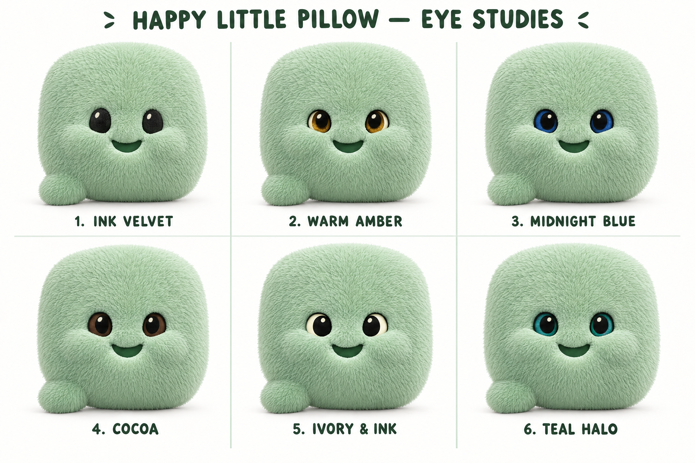
Click to view at full resolution.Download this sheet ↓20 pose studies — approved face
Resting, hovering, bounce, takeoff, landing, stretch, leaning, peeking, looking up and down, bowing, wiggling, spinning, tumbling and resting. The mint pillow and padded cheeks remain consistent; open eyes use Ivory & Ink.
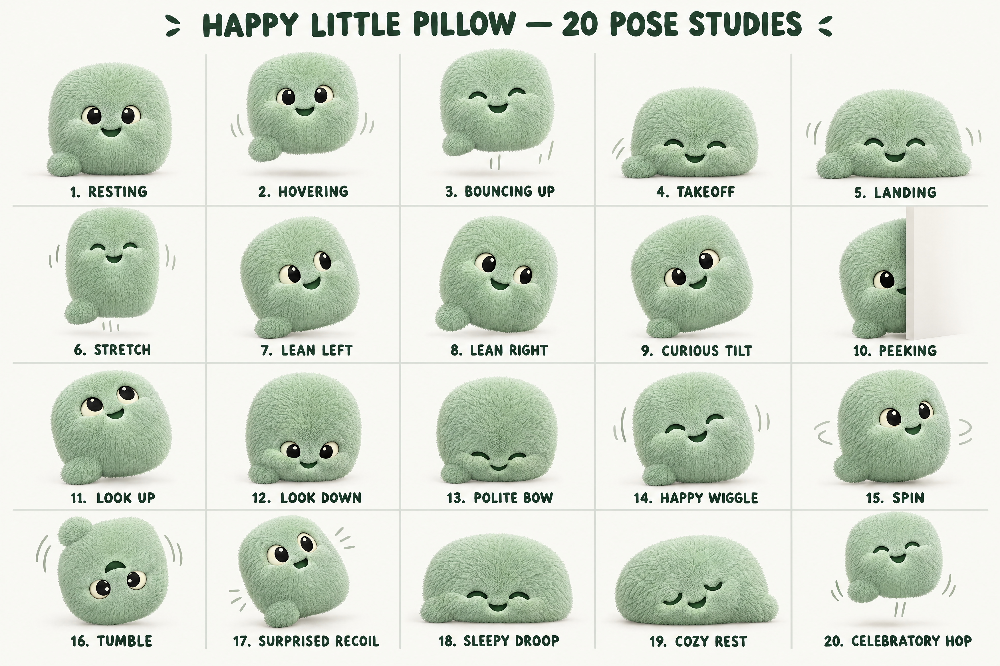
Updated from the approved Happy Little Pillow portrait and Ivory & Ink eye reference. Click for full resolution.Download this board ↓Material & grooming research — approved face
Twelve grooming treatments, six fibre studies and four facial-material close-ups. Short plush, longer silky fur, extra puff, waves and curls retain his mint colour, padded cheeks and Ivory & Ink eyes. Grooming options are exploratory.
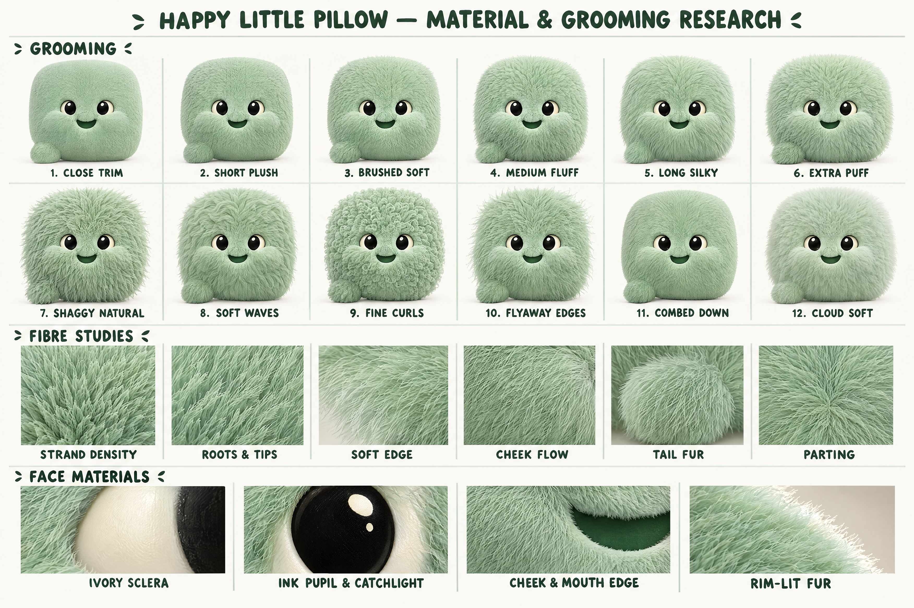
Updated from the approved Happy Little Pillow portrait and Ivory & Ink eye reference. Click for full resolution.Download this board ↓Four palettes — solids & soft gradients
Original mint, cool aqua, minty forest and sage. Each has a solid-colour version and a smooth gradient, with the same padded cheeks and Ivory & Ink eyes.
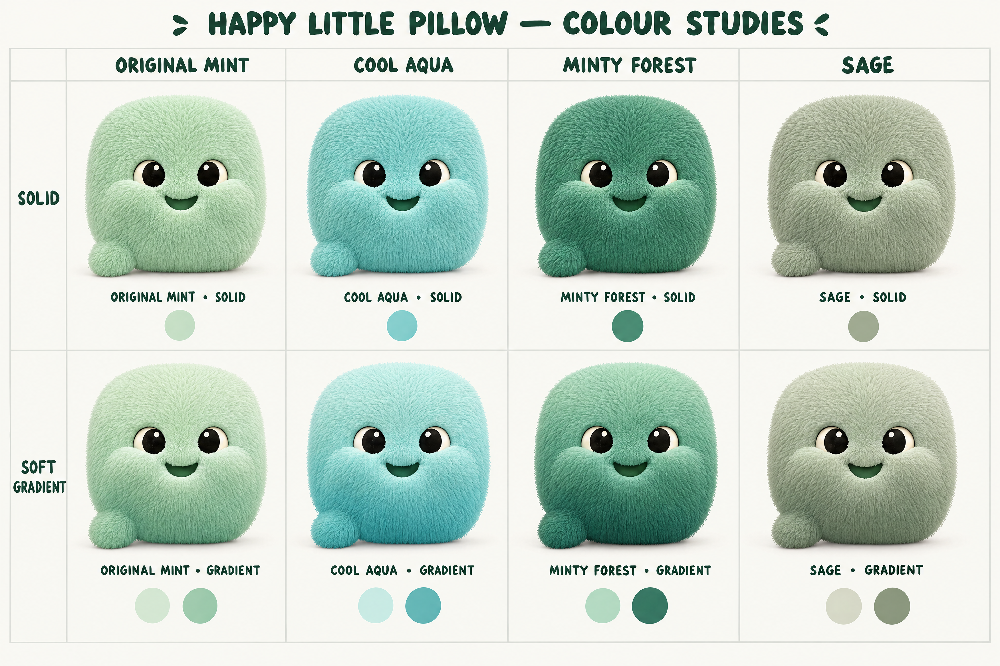
Colour changes apply to the fur. Eyes, facial features and character proportions retain the approved direction. Click for full resolution.Download the colour board ↓Character research — approved face
Sixteen studies covering the approved face, front and side views, rear, padded cheeks, smile, tail connection, fur flow and identity palette. Open eyes use Ivory & Ink #5.
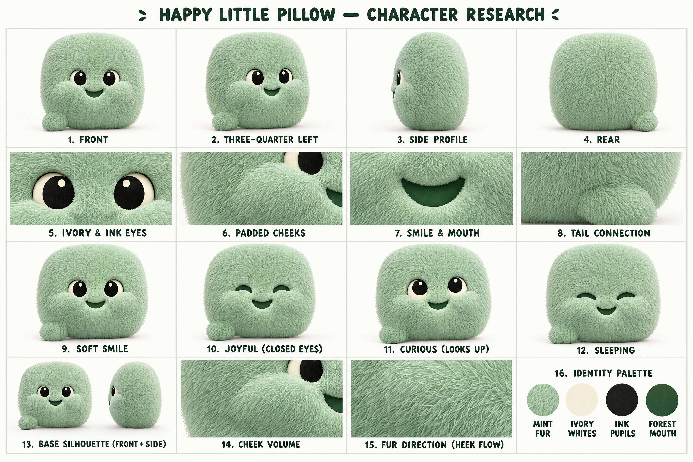
Updated from the approved Happy Little Pillow portrait and Ivory & Ink eye reference. Click for full resolution.Download this board ↓Industry clothing & costumes
Eight looks: contractor, salon, dog groomer, photographer, mechanic, medical, glasses and everyday. Salon and groomer wear aprons; the mechanic wears a tool belt. No salon hairpins, grooming towel or dog collar. The tiny tilted contractor hardhat stays.
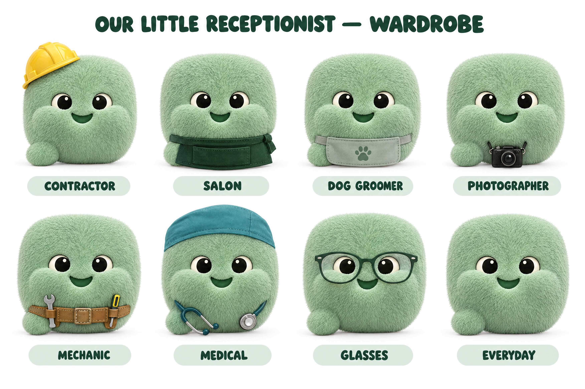
Updated with the approved pillow face and padded cheeks. Click for full resolution.Download this board ↓Our Little Receptionist
The updated character overview: Happy Little Pillow’s portrait, five orientation studies, expressions, poses, material details and identity palette. Open eyes use the approved Ivory & Ink direction.
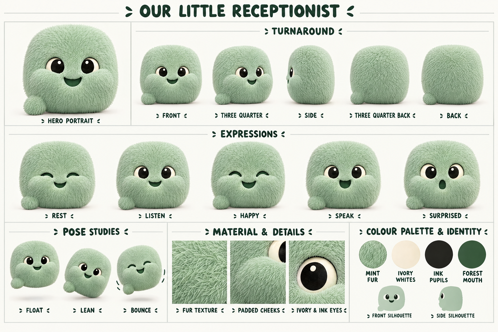
Updated with the approved pillow face and padded cheeks. Click for full resolution.Download this board ↓